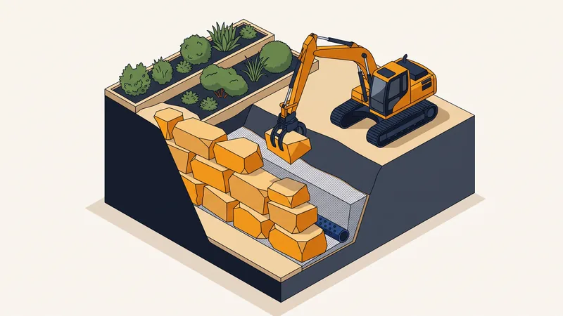

Enrochement : choisir les pierres et réussir la pose

Un enrochement retient un talus avec de gros blocs de pierre empilés, sans mortier. Sa stabilité ne vient pas d'un liant mais de trois choses : le poids des blocs, leur imbrication et le drainage placé derrière. Négligez l'une des trois et l'ouvrage bascule, souvent au deuxième ou troisième hiver.
Quelle pierre choisir pour un enrochement
La pierre doit être dure, non gélive et anguleuse. Les blocs arrondis roulent les uns sur les autres : ils ne s'imbriquent pas.
| Pierre | Densité | Aspect | Usage |
|---|---|---|---|
| Calcaire dur | 2,5 - 2,7 t/m³ | Beige à gris clair | Le plus courant en Provence |
| Granit | 2,6 - 2,8 t/m³ | Gris à rosé | Très dur, insensible au gel |
| Basalte | 2,8 - 3,0 t/m³ | Gris foncé à noir | Forte densité, murs hauts |
| Gneiss / schiste | 2,6 - 2,8 t/m³ | Gris feuilleté | Aspect plat, pose en assises |
| Grès | 2,2 - 2,5 t/m³ | Ocre à brun | Décoratif, éviter en gélif |
| Calcaire tendre | 1,8 - 2,2 t/m³ | Blanc crème | À proscrire : se délite |
En Provence, le calcaire dur local est le choix par défaut : il est extrait à proximité, il s'accorde avec le paysage et son coût de transport reste faible. Le transport est d'ailleurs le poste qui fait basculer un budget : au-delà de 60 à 80 km de carrière, il peut dépasser le prix de la pierre elle-même.
Quel poids de blocs selon la hauteur du mur
Règle de dimensionnement usuelle : la base de l'enrochement doit mesurer environ la moitié de sa hauteur, et les blocs les plus lourds vont toujours en bas.
| Hauteur retenue | Poids des blocs | Largeur de base | Étude requise |
|---|---|---|---|
| Moins de 1 m | 150 - 400 kg | 0,5 - 0,6 m | Non |
| 1 à 2 m | 400 kg - 1 t | 0,8 - 1,2 m | Recommandée |
| 2 à 3 m | 1 - 2,5 t | 1,2 - 1,8 m | Oui |
| 3 à 4 m | 2,5 - 5 t | 1,8 - 2,5 m | Oui, avec note de calcul |
| Plus de 4 m | Ouvrage d'art | Étude géotechnique | Obligatoire |
Au-delà de 3 m, ou en présence d'une charge en tête (une route, une construction), un enrochement relève du calcul de stabilité et doit être étudié par un bureau technique. Voir notre guide de l'étude de sol G1 et G2.
Les six étapes de la mise en œuvre
1. Purger et tailler le talus
On retire la terre végétale et tout matériau instable jusqu'au sol porteur. Le talus est retaillé selon la pente prévue, généralement 3 pour 1 en fruit arrière.
2. Creuser l'assise
Une fouille de 40 à 60 cm de profondeur reçoit la première assise. Cet ancrage sous le niveau du sol fini empêche le pied de l'ouvrage de glisser vers l'avant.
3. Poser la première assise
Les blocs les plus gros, posés sur leur face la plus plate, légèrement inclinés vers l'arrière. C'est l'assise qui détermine l'alignement et la stabilité de tout le reste : on y consacre le temps nécessaire.
4. Monter les assises avec du fruit
Chaque assise est reculée de 10 à 15 % de la hauteur du bloc — c'est le fruit, l'inclinaison vers le talus. Les blocs sont posés en quinconce, chacun reposant sur deux blocs de l'assise inférieure, et calés entre eux par leurs angles.
5. Drainer l'arrière
C'est l'étape que l'on ne voit plus une fois le chantier fini, et celle qui décide de la durée de vie : un géotextile contre la terre, 30 à 50 cm de grave drainante derrière les blocs, et un drain agricole en pied, raccordé à un exutoire. Sans drainage, l'eau s'accumule et exerce une poussée hydrostatique que l'ouvrage n'a pas été dimensionné pour reprendre.
6. Remblayer et finir
Remblaiement par couches compactées derrière le drain, puis reprise des abords. Sur un enrochement paysager, on garnit les interstices de terre pour y installer des plantes de rocaille : romarin, lavande, sedum, graminées.
Enrochement, gabion ou mur béton : lequel choisir
| Solution | Prix au m² | Durée de vie | Aspect |
|---|---|---|---|
| Enrochement | 100 - 200 €/m² | 100 ans et plus | Minéral, naturel |
| Gabion | 150 - 250 €/m² | 60 - 80 ans | Cages métalliques visibles |
| Mur en parpaings armés | 150 - 300 €/m² | 40 - 60 ans | À enduire |
| Mur en béton banché | 200 - 400 €/m² | 50 - 100 ans | Lisse, peut être parementé |
L'enrochement est souple : il encaisse les tassements différentiels sans se fissurer, là où un mur béton casse. Il demande en revanche de la place — sa base est large — et un accès pour la pelle mécanique. Le gabion est la bonne alternative quand la place manque : à hauteur égale il occupe moins d'emprise, mais ses cages en acier galvanisé vieillissent en bord de mer.
Accès, engins et délai
Un bloc d'une tonne ne se manipule pas à la main. Il faut une pelle mécanique équipée d'un grappin ou d'une pince de tri, et une aire de stockage pour les blocs livrés. Un accès de 3 m de large minimum est nécessaire pour la pelle, et le camion de livraison doit pouvoir décharger à proximité. Pour un enrochement de 20 m² de parement, comptez 2 à 4 jours de chantier une fois les blocs livrés.
Faut-il une autorisation ?
Un enrochement de moins de 2 m de hauteur ne nécessite en général aucune formalité s'il ne modifie pas l'aspect extérieur d'une construction. Au-delà, ou en limite séparative, une déclaration préalable est souvent exigée, et le PLU peut imposer une hauteur maximale ou un recul. En zone protégée ou en site classé, l'avis de l'architecte des Bâtiments de France peut être requis. Renseignez-vous en mairie avant de commander les blocs.
Questions fréquentes
Quelle pierre utiliser pour un enrochement ?
Une pierre dure, anguleuse et non gélive : calcaire dur, granit, basalte ou gneiss. En Provence, le calcaire dur local est le choix habituel. Il faut écarter les calcaires tendres, qui se délitent, et les blocs arrondis, qui ne s'imbriquent pas.
Quel poids de blocs pour un enrochement de 2 mètres ?
Des blocs de 400 kg à 1 tonne pour un mur de 1 à 2 m, avec les plus lourds en première assise et une base d'environ la moitié de la hauteur, soit 0,8 à 1,2 m.
Comment faire un enrochement soi-même ?
Un enrochement de moins de 1 m avec des blocs de 150 à 400 kg reste envisageable avec une mini-pelle de location. Au-delà, le poids des blocs, le dimensionnement et le drainage relèvent d'une entreprise équipée : une erreur de fruit ou un drainage absent fait basculer l'ouvrage.
Pourquoi faut-il un drainage derrière un enrochement ?
Parce que l'eau retenue dans le talus exerce une poussée hydrostatique qui s'ajoute à celle de la terre. Un géotextile, 30 à 50 cm de grave drainante et un drain en pied évacuent cette eau et divisent la poussée sur l'ouvrage.
Quel est le prix d'un enrochement au m² ?
100 à 200 €/m² de parement, pose comprise, pour un chantier accessible en PACA. Le transport des blocs depuis la carrière et la difficulté d'accès font varier ce prix plus que la pierre elle-même.
Un talus à retenir ?
STP Terrassement réalise les enrochements de soutènement et paysagers dans les Bouches-du-Rhône. Nous dimensionnons les blocs, le drainage et l'accès au chantier avant de chiffrer.
Pressé ? 07 45 14 20 49 ou WhatsApp